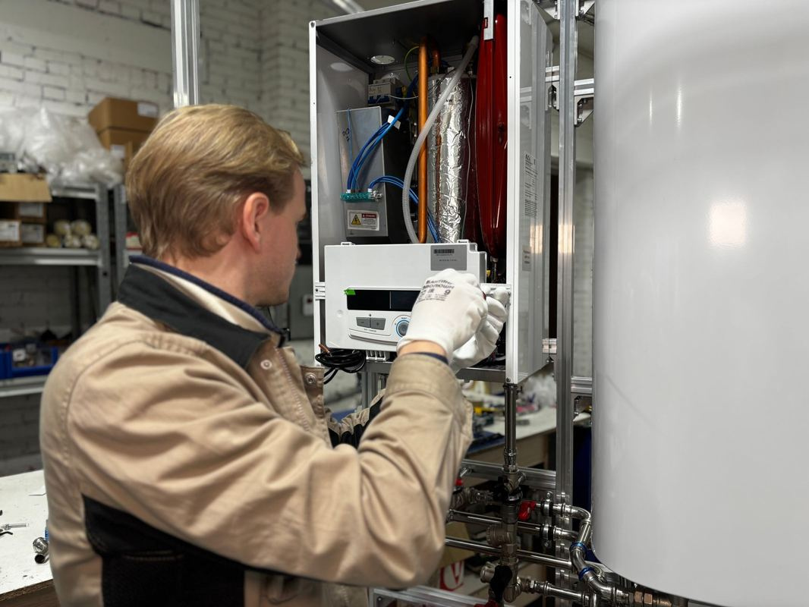

An old water heater or water softener has to be disconnected by the right trade before anybody carries it anywhere. A plumber takes it off the gas or water lines and drains the tank. After that it is a heavy, awkward object wedged into a narrow closet, and that part is ours. Most of what is left is steel, so most of it gets recycled.
The order matters more here than on almost any other job we run. Skip a step and the hallway floor pays for it.
Why the disconnect is not our job
We are haulers. We do not cut gas lines, we do not break water connections, and we will not pretend the job is simpler than it is. In Texas the plumbing trade is licensed and regulated by the Texas State Board of Plumbing Examiners, and a water heater swap is plumbing work rather than furniture moving.
That is not caution for its own sake. A gas water heater has a supply line, a shutoff and a flue. An electric one is wired into a dedicated circuit. A softener is plumbed into the main line with a bypass and usually a drain. Somebody who knows those systems takes it apart and caps whatever needs capping.
In practice most of our water heater jobs arrive one of two ways. Either a plumber has already installed the new unit and the old one is sitting in the garage, or the homeowner had it disconnected and wants it gone before the new one shows up. The job that is not a fit is a live unit still connected to the house, and we will say so on the phone rather than send a crew out to find it.
What is actually in that closet
More than people remember. A utility closet in a North Texas house collects things for twenty years, and the tank is only the largest item in there.
The usual haul is the old tank, a softener or filter housing beside it, a rusted drain pan, whatever shelving got built in above the unit, a stack of salt bags that got damp and hardened, old furnace filters, paint cans somebody set down in 2011, and a water heater blanket slumped on the floor since the last replacement.
Two of those need flagging. Salt bags are heavy, and a pallet of hardened salt is a different job than a few loose ones, so say how many there are when you call. And the paint cans are not ours. Paint and solvent go to a household chemical collection program, which every city in our area runs, and Plano's household chemical collection page is a good example of how the intake works.
Photograph the closet before the plumber comes. Once the tank is out the space looks completely different, and it is easy to forget what was on the shelf above it. That photo is also what we look at for a quote, because it shows the door width and the turn out of the closet better than any description.
Draining it, and why that matters to us
A residential water heater holds a lot of water, and water is heavy. A tank that has not been drained is not a two-person carry, it is a spill waiting for a hallway floor. The plumber drains it as part of the disconnect. If a homeowner did the disconnect themselves and left the tank full, it has to be drained before anybody tips it.
There is a second reason nobody thinks about. Sediment settles in the bottom of a tank over the years, and in hard-water country there is a great deal of it. A drain that runs slow or stops usually means the valve is packed, which is a plumber problem rather than a hauler problem, and it is worth finding out before the day you wanted the closet empty.
Softeners hold water too, and they hold salt brine. A brine tank that gets tipped without draining leaves a salt puddle nobody enjoys, so the same rule applies: it gets drained before it gets carried.
The path out of a closet that was built around it
Utility closets are not designed for removal. They are designed to hide a tank, which means the door is often narrower than the appliance and the unit went in before the trim did.
So the crew measures the way out before anything moves. Closet door, the turn into the hall, the hall itself, then the exterior door. A tank comes out upright when it can and tilted when it has to, and on a tilt it needs clearance above as well as beside. Where the closet sits in a garage the job is usually simple. Where it sits in a second-floor hallway or on an attic platform, it is a stair carry with a wall on both sides, and that is the version worth sending photos for.
That is the same skill covered in old furniture removal, and it is one reason we send our own crews rather than gig labor hired off an app that morning. Nobody learns to walk a tank down a staircase on their first day.
Where an old tank actually goes
A water heater is mostly steel, with a glass lining, some copper or brass fittings and a layer of foam insulation. Scrap metal is one of the easiest materials to keep out of a landfill, which the EPA lays out in its recycling basics guidance, and the TCEQ recycling pages cover how that works on the Texas side.
So an old tank goes to a metal recycler rather than to a dump. Same with the softener hardware, the shelving brackets out of the closet, and the flex lines. This is one of the better jobs we run for keeping material out of a landfill, for the unglamorous reason that the biggest item on the ticket is metal.
If you are replacing rather than only removing, the ENERGY STAR water heater pages compare the types without selling you one. We have no stake in which you pick. The longer version of where everything else ends up is in where your junk actually goes after we haul it away.
What the city will and will not take
This is where people get stuck. A water heater is not a normal bulky-trash item in most North Texas cities, and the rules differ by city and sometimes by material. Plano publishes its accepted and restricted lists on its bulky waste page, and the useful habit is reading your own city's restricted list before you set anything at the curb rather than after.
The problem with the curb route is timing. Bulky collection runs on a schedule, and a tank sitting in a driveway for nine days is a tank sitting in a driveway for nine days. Plenty of people are fine with that, and we will say so plainly rather than talk anybody out of the free option.
The appliance side of this, fridges and freezers and the sealed-system rules, is its own post: appliance and electronics disposal in North Texas. And if the reason the closet is being cleared is water damage rather than a swap, start with what happens after a slab leak instead.
How the job runs
Tell us three things when you call. Whether it is already disconnected, whether it has been drained, and where in the house it sits. Those answers decide whether this is a quick stop or a two-person stair carry.
A crew comes out, walks the route, and gives you a firm number before anything is lifted, disposal included. The quote is the bill. They carry the tank rather than drag it, they take the salt and the shelving with it if you want the closet actually empty, and they sweep up after.
We run seven days a week across the northern suburbs, including Plano, Frisco, Allen, McKinney, Richardson, Little Elm, Prosper, The Colony, Wylie and Fairview. Call before noon and the same afternoon is typical, though typical is the honest word rather than a promise. The service page for this work is appliance removal, and if the closet is in a McKinney house, that is the same run we make for old washers and water heaters there. You can send photos of the closet whenever you are ready.
Frequently asked questions
Can you disconnect the water heater for us?
No. That is licensed plumbing work and we do not do it. Have a plumber pull it off the lines and drain it, then call us for the carry-out and the disposal.
The plumber already took the old one away. Why would we call you?
Usually because the rest of the closet is still full. Salt bags, shelving, a rusted drain pan and twenty years of boxes are the part a plumber leaves behind.
Do you take the salt bags?
Yes. Say roughly how many when you call, because hardened salt is heavy and it changes how the crew plans the carry.
What about the paint cans in there?
Those we cannot take. Paint, solvent, pool chemicals and motor oil all go to your city's household chemical collection program, and most cities in our area accept them from residents at no charge.
Is the old tank recycled or landfilled?
Recycled, in almost every case. It is mostly steel, and steel has a real market. That is part of why this job diverts well.
A utility closet is the last space anybody clears out, and usually the easiest to finish in one stop. The rest of what we haul is on the services page.